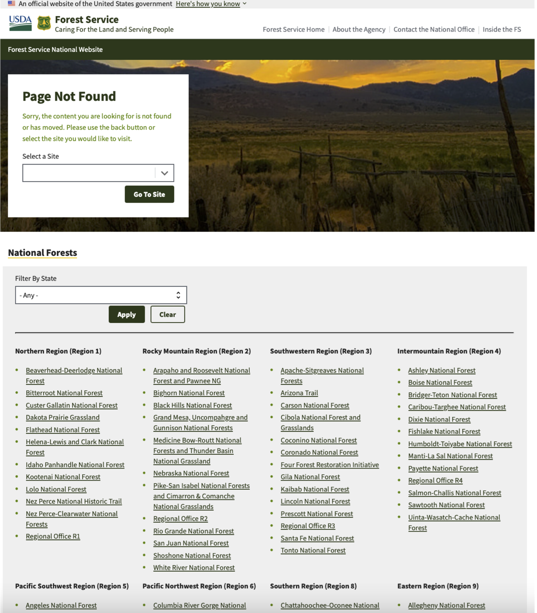

Forest Service Error Page Redesign
Project Scope: Art Direction, Brand Identity, UX Design and Writing, Website Development.
Project Duration: July 2025 (one day).
As part of an online course on UX Design and Writing, I completed a daily challenge to redesign the error pages of a website I use frequently. I chose the Forest Service's website, which has an existing 404 error page (pictured below) but no existing "under construction" website page. I wrote UI copy for this page that helps humanize the website's UX by adhering to brand style and infusing a little creativity into the mix.
Before: serious, stale copy
In the existing 404 error page, the copy and design do not elevate brand identity or lend themselves to a useful redirect. The user does not learn anything helpful from this page and has a huge list of forest names to look through to find another destination.
After: warm, playful copy
In redesigning this page, I wanted it to feel more humanized and easygoing. To achieve that, I used paired a trail sign photo with text about going "off trail" because the page cannot be found.
I also wanted the page to be useful. I added a branded redirect button, and, instead of a long list of forest names at the end of the page, I added tidy boxes that link to recent feature stories. This can enhance the user's experience with the web page and improve their impression of the brand and company.
After: a new maintenance page
The website does not have an "under maintenance" page. To help users differentiate which pages are undergoing maintenance from those that simply do not exist, I created a playful maintenance page using the same format as my 404 error redesign. I matched the background photo of trail maintenance to the maintenance theme of the page. And, again, I added an opportunity to direct users to other useful links at the bottom.